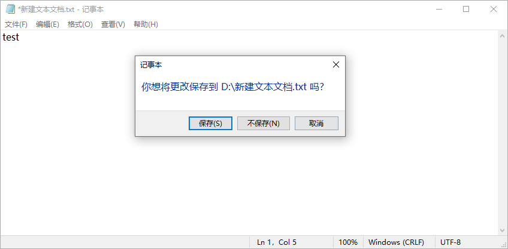
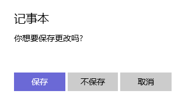
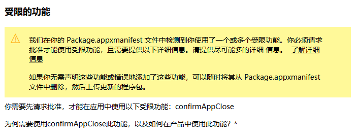
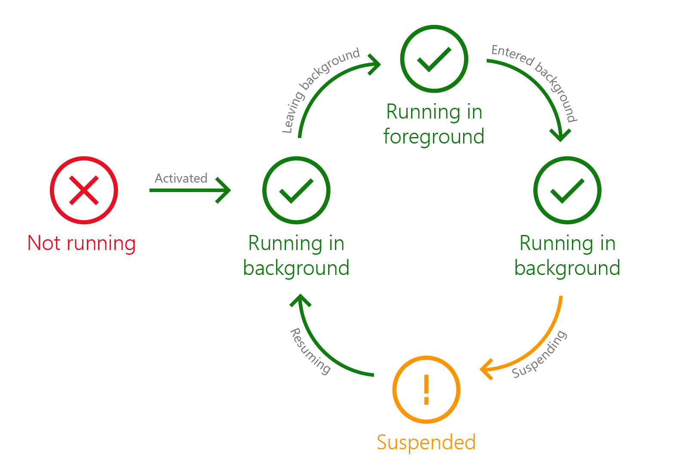
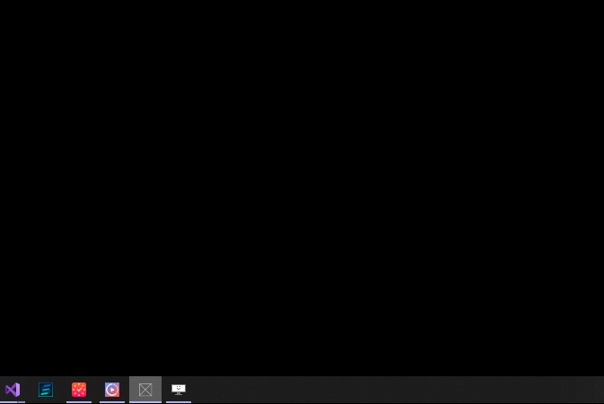

在应用退出时（点击右上角的关闭按钮）弹出一个确认按钮可以说是一个最常见的操作了，例如记事本的“你是否保存”：

但这个功能在UWP上居然有点小复杂。这篇文章将解释如何实现这个功能。
为了监视应用退出事件，我本来使用了CoreApplication.Exiting，但好像并不起作用，后来我就没再研究它的触发机制了。在Windows 10 Creators Update (15063)以后UWP提供了一个新的API:SystemNavigationManagerPreview.CloseRequested事件。这个事件会在用户点击窗体右上角的关闭按钮时触发，开发者可以在这个事件里处理保存数据、确认关闭等。最好在App.xaml.cs中的Window.Current.Activate();前后订阅这个事件。
Window.Current.Activate();
SystemNavigationManagerPreview.GetForCurrentView().CloseRequested += (s, e) =>
{
//DO STH
};CloseRequested事件包含一个名为SystemNavigationCloseRequestedPreviewEventArgs的EventArgs（名字真是超级长），它包含一个Handled属性，如果要取消关闭事件，可以将Handled设置为Ture，这点和WPF很像。SystemNavigationCloseRequestedPreviewEventArgs还提供了GetDeferral函数，它返回一个Deferral对象，它可以在异步操作中延迟UWP应用生命周期事件的执行，知道调用它的Complete方法。配合异步的ContentDialog，具体代码如下：
Windows.UI.Core.Preview.SystemNavigationManagerPreview.GetForCurrentView().CloseRequested +=
async (sender, args) =>
{
var deferral = args.GetDeferral();
var messageDialog = new ContentDialog
{
Title = "记事本",
Content = "你想要保存更改吗?",
PrimaryButtonText = "保存",
SecondaryButtonText = "不保存",
CloseButtonText = "取消"
};
messageDialog.DefaultButton = ContentDialogButton.Primary;
var result = await messageDialog.ShowAsync();
switch (result)
{
case ContentDialogResult.None:
args.Handled = true;
break;
case ContentDialogResult.Primary:
await SaveDataAsync();
break;
case ContentDialogResult.Secondary:
break;
default:
break;
}
deferral.Complete();
};
private async Task SaveDataAsync()
{
}在上面的代码中，如果点击取消按钮，则将Handled设置为true以取消关闭。点击确认则保存数据再关闭应用。无论选择哪个，最后都需要调用Deferral.Complete。最终运行效果应该如下（讲真，ContentDialog真的丑）：

有没有发现上面"最终运行效果应该如下"中的应该两字是粗体？因为这时候上面的代码还是没有效果。究其原因，是因为confirmAppClose是一个受限功能，必须修改应用程序包清单源文件（Package.appxmanifest）， 添加xmlns： rescap XML 命名空间声明，并声明受限功能。
<?xml version="1.0" encoding="utf-8"?>
<Package
...
xmlns:rescap="http://schemas.microsoft.com/appx/manifest/foundation/windows10/restrictedcapabilities"
IgnorableNamespaces="... rescap">
...
<Capabilities>
<rescap:Capability Name="confirmAppClose"/>
</Capabilities>
</Package>这样，在本地运行的时候，应用终于可以弹出确认提示框了。一旦使用了受限功能，应在提交应用到Microsoft Store的时候提供信息以便获得批准，有一些功能只在极其特殊和有限的情况下才获准在提交到 Microsoft Store 的应用中使用，幸好这里时候的confirmAppClose很容易通过。在提交选项里会出现受限的功能这一节，如实填写就可以了，中文也可以。

这样，所有工作都做了，确认提示框功能终于完成了。

我们知道UWP的应用生命周期中，在background 运行和suspended状态时应用基本处于暂停状态，也不会处理UI功能，这时候让它弹框？“除非你叫醒我，否则我罢工”。所以在应用不可视的状态下关闭应用，例如最小化的情况下在任务栏点击关闭窗口，程序能怎么办？
弹框是不可能弹的，只能装死了。
所以这时候程序就完全没有反应。当应用重新回到前台运行，确认框才会弹出来。不过只是个小小的bug，我们可以选择原谅它：

应用功能声明 - UWP apps Microsoft Docs
App package manifest - Windows UWP applications Microsoft Docs
Deferral Class (Windows.Foundation) - Windows UWP applications Microsoft Docs